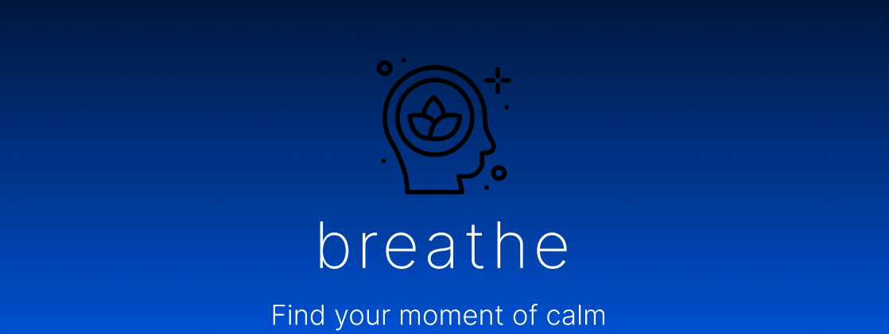
Project
breathe is an interactive mobile application prototype created in Figma, featuring animations designed within Figma as well as Jitter and Lottie animations. The app is designed to promote relaxation and mindfulness through careful design considerations and an intuitive user experience.
Tools
Figma
Jitter
Lottie Animations
This project was centred around mobile application design within Figma and also featured animations. I had limited prior experience with Figma and animations so this was a fantastic opportunity to develop my skills in these areas. I typically focus on website design, so this project gave me a better insight into designing for mobile applications and how user interaction differs between them.
The app includes several sections that are easy to navigate between, each serving a specific purpose. Design decisions were made carefully to reinforce a sense of calm, from the colour palette and typography to the overall layout which was informed by usability principles such as Nielsen’s heuristics. Features such volume control and light/dark mode were included to support both personal preference and accessibility.
Please click here if you'd like to view the app prototype within Figma. Please use the navigation buttons within the prototype for the best experience instead of the arrows at the bottom of the prototype.
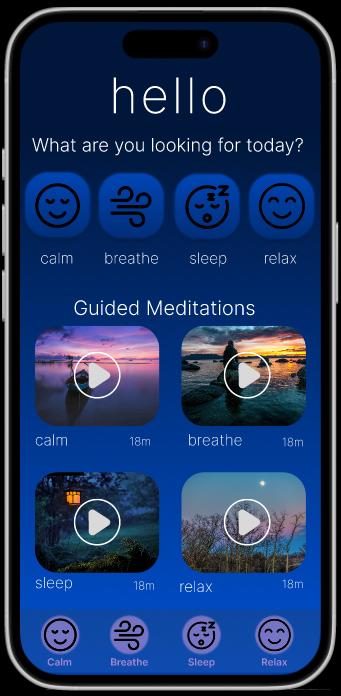
Home screen
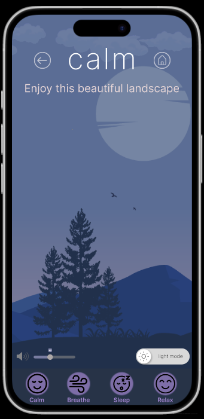
Calm screen (animation)
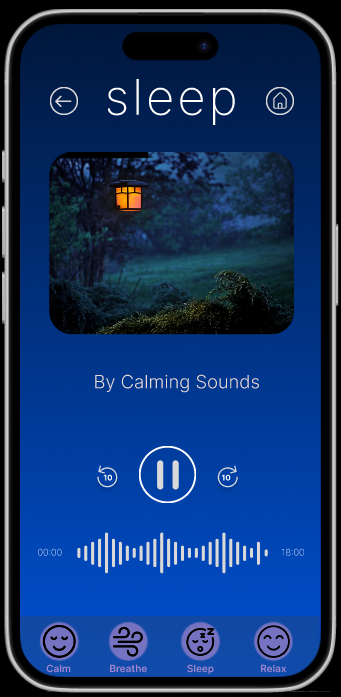
Guided meditation
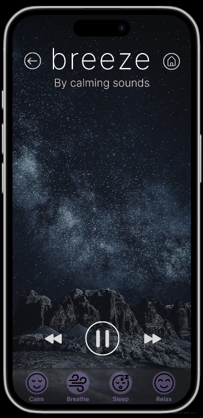
Soothing soundscape
Before starting the design, colours were chosen carefully. Research in colour psychology has shown that cool colours, such as blues, purples and greens are effective in evoking feelings of calmness. These colours were used consistently throughout the app to support its purpose. Blue was chosen as the primary colour of the app due to its associations with calmness and trust which is important for mindfulness-based mobile applications. I created a blue gradient within Figma, inspired by natural elements such as the sky and ocean to create a soothing visual experience. I created two other distinct gradients which were animated to move slowly to create a visually calming experience. The gradients were created using different blurred shapes in various calming colours. Both light and dark modes were designed, with the dark mode using deep shades of blue and purple/pink whereas the light mode featured lighter shades of blues, purples and greens creating an uplifting atmosphere.
Typography was also carefully considered before creating the prototype, Inter was selected as the primary font due to its high legibility and clean visual appearance. Text styling, including size, weight and spacing were used to create clear visual hierarchy and improve readability. The main headings were styled without capital letters due to research showing that lowercase text leads to a more relaxed visual experience. Letter spacing was also increased to improve clarity and calmness which was particularly important for the information pages. These pages feature different tips and techniques for achieving calmness such as breathing techniques.
User interface elements such as buttons were designed with rounded corners rather than sharp edges due to research showing that rounded shapes are more comfortable visually. Other buttons such as pause/play were put inside circles to create a similar effect. Each element provided feedback to users through subtle transitions when users click or hover over them just like how the final app would function.
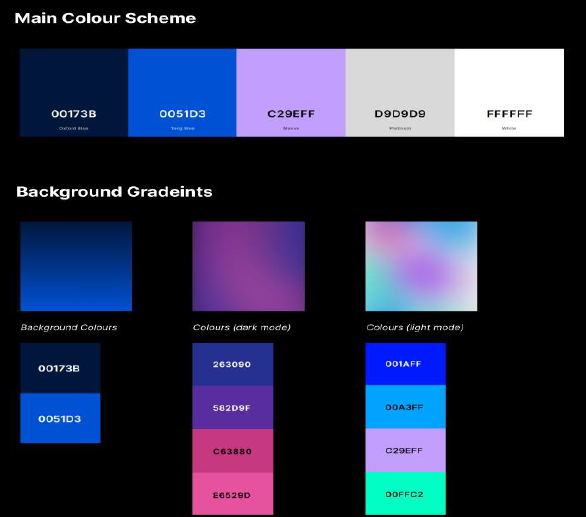
Colour palettes and gradients
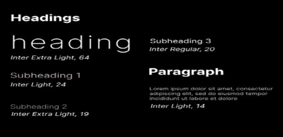
Typography
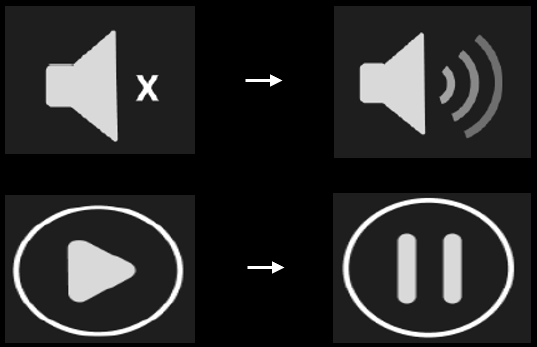
Mute/unmute variants & pause/play
To ensure the app was easy to navigate, I planned the navigation structure in advance through creating a navigation map. This helped me picture how each screen would connect and ensure that users were able to navigate the app without any difficulties. This also helped me identify what components were needed such as navigation bars and back/home buttons.
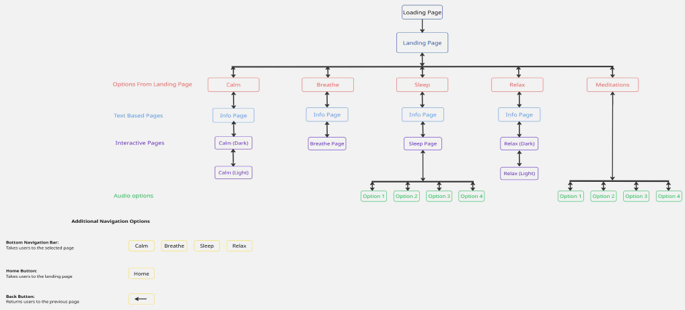
Navigation map
I developed a user scenario and user journey to help me understand how a user might use the app in a real-world context. I explored the steps the user would need to take within the app to achieve their goal. This enabled me to ensure that the design was practical and user-centred which helped minimise the risk of frustration.
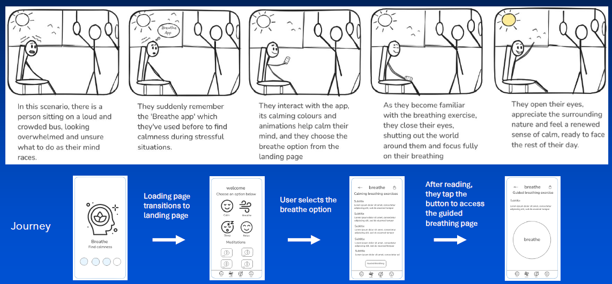
User scenario and journey
This project significantly improved my prototyping skills within Figma as well as my ability to design for mobile applications. I also gained new skills in creating animations and icons with variants. I experimented with Figma's built-in tools, particularly for interactivity and animations, but I also tried out other tools such as Jitter and Lottie animations for animated features.
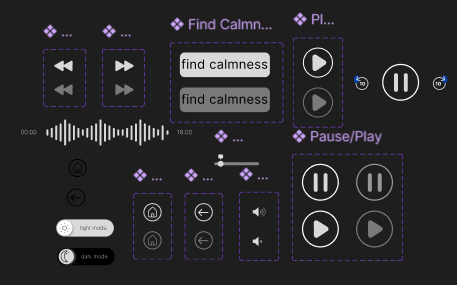
Self-created icons with variants
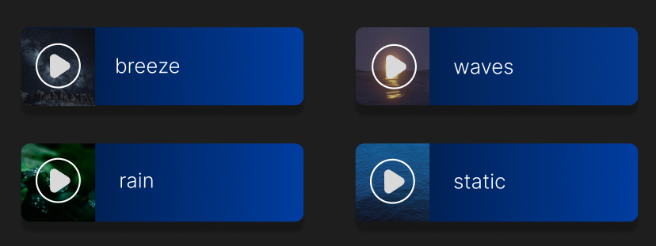
Self-created soundscape option buttons